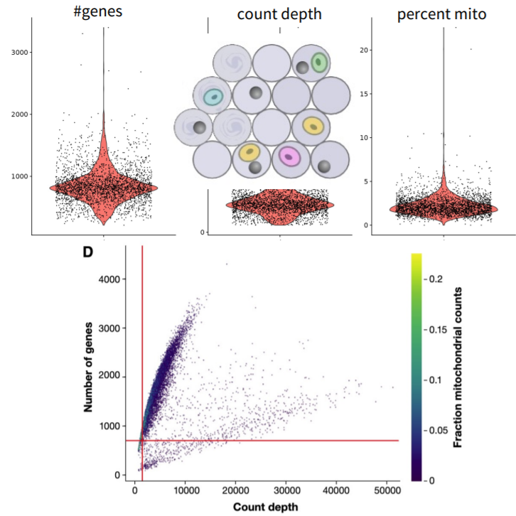

Chapter 3 Single-cell RNA-seq Data Processing and Quality Control
Once the raw data is obtained, the first thing to do is to check the quality of the reads and process it accordingly. In this chapter, we will go through quality control and processing methods for single-cell data.
3.1 Cell Ranger Pipeline
![Cell Ranger Pipeline [-@10xGenomics2019]](figures/Cell-Ranger.JPG)
FIGURE 3.1: Cell Ranger Pipeline (2019)
In 10X Genomics workflow, which is the main workflow that is commonly used
nowdays, Cell Ranger pipeline is used to process Chromium single-cell data to
generating feature-barcode matrices, reading alignment, filtering, clustering
and perform other secondary analysis methodologies.(2019)
Cell Ranger identifies each sample, cell and molecule. Identification done by
using sequencing barcodes (eg. Illumina i7 and i5 indices) for samples,
cell-specific barcodes for cells and, UMIs for molecules. The typical Cell Ranger results looks like this:
FIGURE 3.2: Cell Ranger Pipeline Results (2019)
In the previous chapter, we mentioned that some of the droplets may contain no
cells. In the qc summary report of the Cell Ranger pipeline, Cell Ranger
predicts the number of cells within the inputed data and print the estimation in
“Estimated Number of Cells” section. The “Barcode Rank Plot” indicates the
droplets that contains bead but no cell with the grey color. To determine a
cut-off and remove noisy data, bioinformaticians benefit from this plot. The
“Mapping” section of the report indicates percantage of reads that is aligned
successfully to the genome.
HINT : If the mapping rate is low and, you are working with the pure data (eg. human data) that may indicate contamination.
NOTE :
Cell Rangerprints error, if there is a quality issue.
3.1.1 FASTQ File Format
High-throughput sequencing reads usually outputs FASTQ files. Cell Ranger
pipeline produces FASTQ files as well. Let’s take a look at the FASTQ file
format below.

FIGURE 3.3: Structure of a FASTQ file
Each FASTQ file contains three parts. The first line of the FASTQ file that
starts with @, contains the read identifier, which indicates the position on
the flowcell. The DNA sequence starts from the second line. And the line comes
before another read identifier contains the per-base sequencing quality score
(also called PHRED score). The formula of the PHRED score is given below where P
is the “Probability of base calling error”.
FIGURE 3.4: The formula of the PHRED score
3.1.2 Sequencing Quality : FASTQC tool
Sequence quality can be determined by FASTQC tool. FASTQC tool provides
simple quality control check on raw sequence data that comes from high
throughput sequencing pipelines. Anders (2010)

FIGURE 3.5: FASTQC Results
FASTQC tool provides:
- Summary statistics (number of reads, …)
- Sequencing quality summaries
- Sequence biases
- Duplicate reads
- Sequence contamination (adapters, etc.)
3.1.3 Read trimming
Sequencing data analysis pipelines modify the read sequences produced by a sequencer. There may be sequence biases due to structural oligonucleotides (adapters, etc.) and low-quality sequences. Trimming at reading ends is done as the first operation in a pipeline to avoid sequence biases.

FIGURE 3.6: High-throughput sequencing pipeline scheme
There are several softwares present to apply trimming, frequently used ones are:
3.2 Demultiplexing

FIGURE 3.7: Data processing pipeline workflow.
Although the high-throughput sequencing methods provides data with good quality, errors via PCR can be introduced when preparing the library. When working with working with single-cell RNA sequencing data the initial cDNA libraries undergo PCR amplification multiple times. Thus, PCR errors are often introduced when preparing single-cell RNA sequencing library. Demultiplex is a simple sequencing error correction algorithm used to prevent this kind of errors. Zhang et al. (2018)
Demultiplexing indicates identification of cell barcodes, assigning cell-barcode to the associated reads and, filtration of cell-barcodes. If the data contains UMIs, UMI codes are mapped to the read name of the gene-body containing read. UMIs are counted for each cell and gene thus, duplicates are avoided. Genes are identified via sequence mapping. And, if the expected cell-barcodes are known, assigned barcodes are filtered accordingly.
Demultiplexing is done differently depending on the protocol and the pipeline of choice. In general, the data obtained from paired-end full transcript protocols and, Smart-seq2 are already be demultiplexed. If the data was not demultiplexed, you need to apply it yourself depending on the protocol used to produce raw data.
3.3 STAR: Ultrafast Universal RNA-seq Aligner
After trimming and, prof the data has good quality, the data needs to be mapped to the corresponding reference genome. This mapping process is called alignment and, it is necessary if we’re interested in gene expression analysis (eg. differential gene expression analysis, quantifying etc.) Kallisto and STAR are the most popular alignement tools. Dobin et al. (2013)
FIGURE 3.8: STAR workflow.(2017)
In summary, STAR searchs for the longest sequence in the data that is also present in the reference genome using an uncompressed suffix array (SA). This process is called seed searching. The longest matching sequences are called “the Maximal Mappable Prefixes (MMPs)”. The MMP side and the unread side are named as different seeds (eg seed1,seed2). After finding MMP, STAR searchs for the next the longest sequence. If an exact matching sequence for each part of the read is not found,the previous MMPs will be extended. And, if extending the previous MMPs oes not give a good alignment, then the poor quality or adapter sequence (or other contaminating sequence) will be soft clipped. These process is repeated for each for unmapped part of the read in forward and reverse directions. Dobin et al. (2013) STAR detects splicing events in this way, because of that,it also called splice aware aligner.
Then seeds are clustered by proximity to ‘anchor’ seeds (or uniquely mapping seeds) and, seeds are stitched together based on alignment score using dynamic programming. The scoring done based on matches, mismatches, insertions, deletions and splice junction gaps. Mistry, M. Freeman, B. Piper (2017)
3.4 Transcript Quantification: KALLISTO
![Kallisto workflow.[-@Bray2016]](figures/Kallipso.JPG)
FIGURE 3.9: Kallisto workflow.(2016)
While STAR is a read-alinger, Kallisto is a pseudo-aligner. That means, while STAR mapp reads to a reference genome, Kallisto mapps k-mers. Kallisto assign reads to transcripts without assigning specific positions for each base. Instead, it uses a Transcriptome de Bruijn Graph (T-DBG). A k-mer is a nucleotide sequence that length k derived from a read. Each transcript act as a path through the graph and, transcriptome reference represented as consecutive k-mers. Kallisto maps reads to splice isoforms rather than genes. Bray et al. (2016)
EM-algorithm is used to estimate transcript abundance and optimize compatibility (likelihood). Intersection of vertex compatibility classes indicates compatible transcripts.

FIGURE 3.10: The EM algorithm formula.
K-mers of reads can be mapped to vertices using their exact matches (also called hashing). Read compatibility is found by matching the read mapping with transcript-induced paths (compatibility classes). It is much more faster than read-aligners. Pseudo-aligners can cope better with sequencing errors. For example, if k is sufficiently large, the error k-mers may not be part of the transcriptome and can be ignored.
3.5 The Single-Cell Data
FIGURE 3.11: Representation of the single-cell count data
The raw counts of single-cell data are integers. The count matrices are sparse but, high dimensional. Therefore, feature selection and, dimensional reduction methods are necessary.
FIGURE 3.12: Representation of the sparse data (2009)
If the matrix has zero values for most elements, it can be considered as sparse data. The sparsity can be determined by the Number of Non-Zero (NNZ) ratio of elements. If the NNZ ratio is above 0.5 data can be considered as sparse data.
FIGURE 3.13: Representation of the Coordinate Matrix (COO) (2009)
To save memory, the sparse data can be stored in a coordinate matrix (COO). Only the non-zero elements stored as vectors and their respective indices in a COO. Thus, more efficient and less biased computation can be done on data.
![Compressed Sparse Row [-@Eding2009]](figures/scdata3.gif)
FIGURE 3.14: Compressed Sparse Row (2009)
The Compressed Sparse Row (CSR) format is designed for more efficient indexing and computation and, it can be considered as “read-only”. The data (x) within the CSR consist of non-zero elements, index (i).
- Length = length of x
- Column indices of non-zero data
![Compressed Sparse Column [-@Eding2009]](figures/scdata4.gif)
FIGURE 3.15: Compressed Sparse Column (2009)
Compressed Sparse Column (CSC) works exactly the same as CSR. But, instead of row based index,CSC has column based index pointers.
Pointers (p):
- Length = number of rows + 1
- Cumulative number of non-zero elements
- Differences indicate number of non-zero elements per row
3.6 Data normalization
FIGURE 3.16: Single-cell sequencing counts
Single-cell sequencing data needs to be normalized to make quantifications comparable across cells and, mitigate cell-specific coverage biases. There are several methods present for normalizing the single-cell sequencing data. Hafemeister and Satija (2019)
- Within-sample normalization.

FIGURE 3.17: Within-sample normalization formulas.
- Non-linear normalization
FIGURE 3.18: Non-linear normalization formulas.
- Scaling: z-score
FIGURE 3.19: Scaling: z-score formula.
- Scale genes to mean 0 and variance 1
- Weight genes equally in downstream analysis
- Often used for visualization
- Advanced methods for computing scaling factors
- DESeq, edgeR: pseudo-reference sample
- scran: robustness through pooling and deconvolution of cells
- sctransform:
- Can incorporate other covariates besides total counts for batch correction
- Avoid overfitting by regularization of fitted parameters over all genes
3.7 Dealing with Batch Effects
FIGURE 3.20: Representation of batch effect and, the ComBat formula.
There may be variations in the single-cell sequencing data due to confounding factors. These variations are called batch effects. Ideally, batch effects needs to be identified and corrected. Batch effects can be identified in exploratory analysis (dimensionality reduction, clustering, etc.) if adequate annotation is provided. Identified batch effects can be corrected by simple linear models (eg ComBat: empirical Bayes approach). The confounding factors that may cause batch effects are listed as below:
Cell collection date
Instruments and protocols used
Cell environments
Genetic population
Factors that are not the focus of the analysis
NOTE: Batch effects can only be corrected for if experiments are designed in a non-confounded way.
- Sample groups need to be split across experimental batches
3.8 Data cleanup (filtering)
Along with the sparsity, single-cell sequencing data may contain uninformative data. This kind of uninformative data may be due to several reasons such as dying cells, cells with broken membranes and, doublets. These conditions are examples of outlier barcodes. We need to filter the data to remove the uninformative data. Filtration is done by removing the cells using metric thresholding ,removing genes and, removing droplets.

Remove cells using metric thresholding: * Number of reads per cell * Number of genes detected per cell * Mitochondrial read fraction (indicates the death and dying cells)
Remove genes * Genes expressed in only few cells * Not all genes might be relevant in all contexts (e.g.mitochondrial and ribosomal genes)
3.9 Empty Droplets
One barcode should correspond to one cell, but barcodes may not tag any cell (empty droplet) or, barcodes may correspond to multiple cells (multiplets, doublets). when removing droplets,the goal is to remove barcodes not corresponding to actual cells and, retain barcodes corresponding to actual cells with low RNA content. Lun et al. (2019)
The simplest way to remove droplets is setting a threshold on UMI counts.
- 99th percentile (minus 10%) of expected number of cells
- Filter based on elbow (knee) plot
EmptyDrops ambient testing is another option.
- Fit “ambient distribution” using barcodes below a threshold T
- Statistically test barcodes whether they significantly deviate from the
ambient distribution
- Good-Turing Smoothing algorithm to test deviation from multinomial (Dirichlet) distribution over all genes
Or, Combine ambient testing with thresholding: add high-UMI count barcodes as true cells.
3.14 Data imputation / Data Smoothing
We already mentioned that single-cell data is noisy due to missing data and stochastic transcription. Missing values can be imputed via several methods, this process called data smoothing (eg data imputation).
FIGURE 3.21: Representation of Data imputation / Data Smoothing in single-cell RNA-seq data
Imputation may be beneficial however, we must be careful with over smoothing. Over smoothing indicates false positives in differential analysis or artificial clusters. To detect over smoothing, downstream analysis on smoothed data needs to be carefully considered. Andrews and Hemberg (2018)
Here are the most popular imputation tools/softwares:
- scImpute: log-normal model detects dropout events and imputes using profiles from similar cells
- SAVER: negative binomial distribution modeling
- Knn-smooth: nearest neighbors
- dca: autoencoder
- MAGIC: diffusion
- netSmooth
3.15 MAGIC (Markov Affinity-based Graph Imputation of Cells)
FIGURE 3.22: Imputation with MAGIC (2018)
MAGIC is one of the sophisticated imputation/smoothing methods. MAGIC assumes that neighbors are informative. In summary, MAGIC algorithm calculates the gene scores signal across neighbors (nearby) cells and, impute gene scores based on this signal. The overall MAGIC workflow is given below.
FIGURE 3.23: The MAGIC workflow (2018)
MAGIC calculates the distance between neighbors and, the affinity of the neighbors. Then, learns from this manifold data with the implemented manifold learning algorithm. As a result, MAGIC construct a graph and, use it to impute the features. Dijk et al. (2018)
FIGURE 3.24: The formulas used in MAGIC imputation (2018)